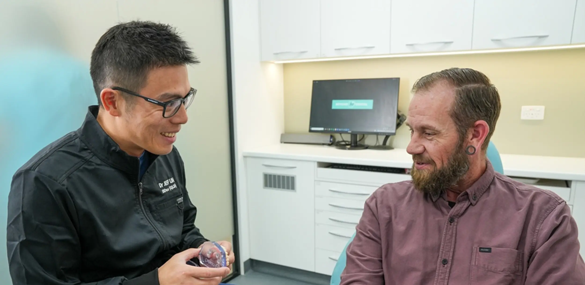
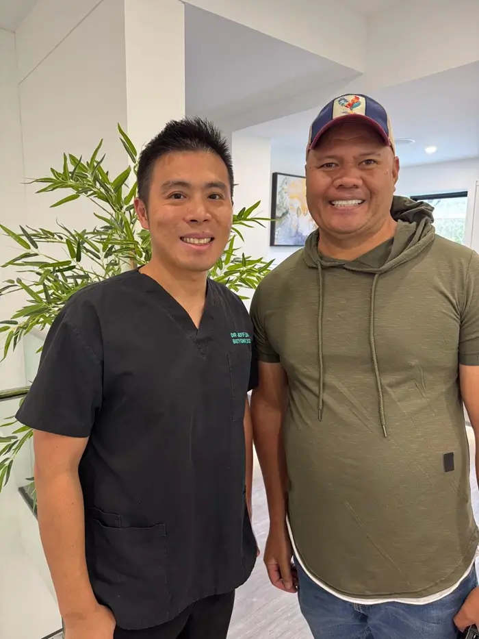
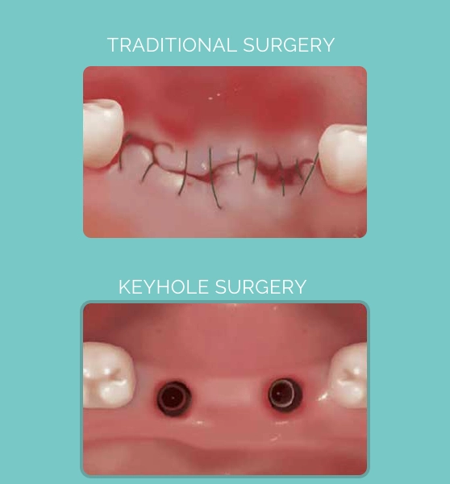
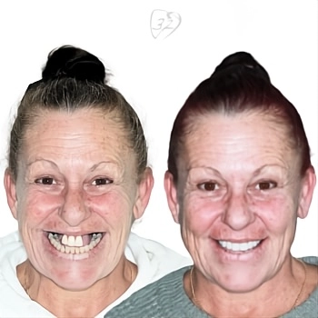
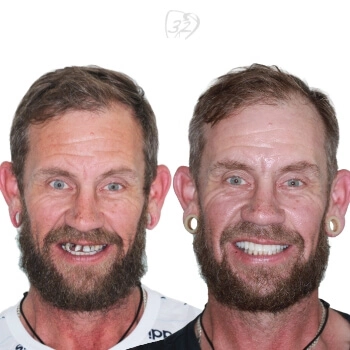
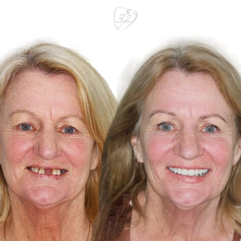
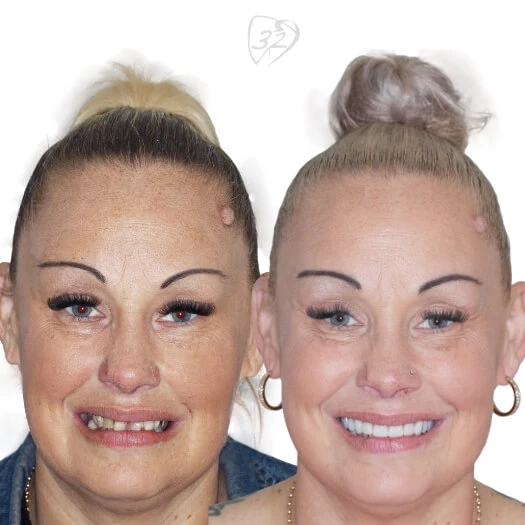
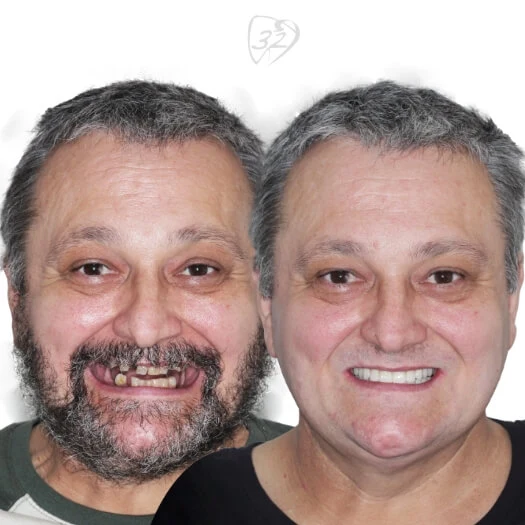
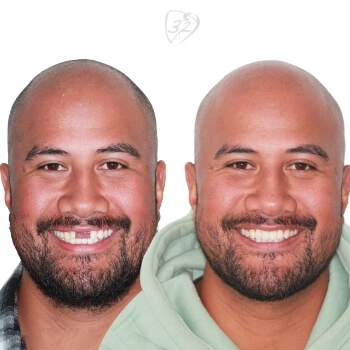

 5.0 from 360+ Google reviews
5.0 from 360+ Google reviews
Innovative solutions and long-lasting results
Dental implants in Pennant Hills
Missing teeth can affect your confidence, your oral health, and your enjoyment of everyday life. At Beyond 32 Dental, we provide high-quality dental implants that look, feel, and function just like natural teeth.
- Keyhole implantsDr Jeff is trained in digital keyhole techniques
- Single tooth to full smileOne implant or a complete smile restoration
- Gentle sedationand sleep dentistry for a calmer experience
- Flexible payment plansAll health funds accepted, claimed on the spot
Whether you need a single tooth replaced or a complete smile restoration, we guide you through the entire process.
Whether you require a single tooth replacement or a complete smile restoration, our experienced team will guide you through the entire process, offering flexible payment plans.
For your peace of mind, we also offer gentle sedation and sleep dentistry, ensuring your treatment is as comfortable and stress-free as possible.
The consequences of missing teeth
Missing teeth will not only affect your smile and chewing ability. More importantly, after a tooth is lost, the underlying jaw bone will shrink.
The shrinkage of bone will cause a lack of support of the face.
Do you have a loose denture? Do you have missing teeth? Dental implants can be a solution.
Book online now →Visit our trusted dental clinic in Pennant Hills, specialising in safe and effective implant solutions for the local community.
What are dental implants in Pennant Hills?
Dental implants are biocompatible titanium rods sitting under the jaw bone. Once integrated into the jaw bone, they can be used to support artificial teeth, or provide an anchor for a loose denture.
- CrownThe artificial tooth you see and chew with
- AbutmentThe connector between the crown and the implant
- Implant postThe biocompatible titanium rod that integrates with the bone
- Gum
- Jaw bone
There are several advantages of dental implants compared to other treatment options for missing teeth:
No damage to the teeth either side
Unlike a bridge, dental implants will not damage either side of the missing tooth. Stand-alone implants prevent the neighbouring teeth from needing a crown, especially if they are not heavily restored. Compare crowns and bridges.
An anchor for a loose denture
When a denture is loose, whether full or partial, dental implants can become anchor points for it. More importantly, dental implants can maintain the bone volume, stopping it shrinking any further. This cannot be achieved by a removable denture.
What can dental implants be used for?
Your dentist will recommend an option based on how many teeth are missing, your bite, and your jawbone support.
Dental implants are commonly used for:
- Replacing a single missing tooth
- Replacing multiple missing teeth
- Supporting a full-arch restoration (a “complete smile restoration”)
- Stabilising loose dentures (full or partial)
Digital keyhole implants
At Beyond 32 Dental, Dr Jeff is well trained in digital keyhole implants.
What are “digital keyhole implants”?
Digital keyhole implants are a modern implant approach that Dr Jeff is trained in. The term “keyhole” typically refers to a more minimally invasive, guided technique, often supported by digital planning to improve accuracy and predictability.

Benefits of keyhole implants include:
- Less chair time
- Faster recovery
- Minimal discomfort after surgery

It’s important to note that not every patient is suitable for this approach. Whether “digital keyhole” implant placement is appropriate is best determined during your consultation, based on your oral health, bone levels, and treatment goals.
Call us today to find out if this is the right treatment for you.
(02) 9158 6334 →Implant smiles
Dental implants that look, feel, and function just like natural teeth.
Patient images are published with consent and are intended for educational purposes only. Results vary between individuals, and all dental procedures carry risks. Please seek professional advice from your dentist to determine whether a treatment is appropriate for your circumstances.






How long do dental implants last?
Dental implants are designed to be a long-term solution, and the best evidence we have supports decades of function for many patients.
- 96.4%
Estimated implant survival at 10 years.
Read moreShow less
A major systematic review of contemporary implant systems reported a 10-year implant survival estimate of 96.4% (with a more conservative sensitivity analysis estimate of 93.2%).
- 88–92%
Survival rates around 20 years for modern implants.
Read moreShow less
A 2024 meta-analysis focusing on modern screw-shaped, rough-surface titanium implants reported 20-year survival rates around 88% (retrospective studies) and 92% (prospective studies), noting the importance of long-term follow-up and that causes of failure are multifactorial.
The practical way to explain this is:
The implant fixture (the “titanium rod/root”)
15–20+ years
The implant fixture often lasts 15–20+ years and can last longer, particularly with good home care and regular maintenance.
The visible tooth on top (implant crown)
5–15 years
The implant crown may need replacing earlier due to normal wear and tear. Cleveland Clinic notes crowns generally last 5–15 years, depending on materials and care.
Key factors that influence longevity include:
- Gum health
- Smoking status
- Bite forces and grinding
- Medical conditions that affect healing
- How well the implant is cleaned and maintained
How do I care for dental implants?
Think of implants as “low fuss, not no fuss”.
They’re not vulnerable to tooth decay, but they can be affected by gum inflammation and infection around the implant, so daily cleaning is essential.
Daily home care
A soft manual or electric toothbrush is fine.
Using floss designed for implants, interdental brushes, or a water flosser (your dentist can recommend the right size and technique).
Pay extra attention to the gumline around the implant crown or bridge. This is where plaque tends to collect.
Ask about a night guard, as excessive forces can shorten the lifespan of the crown or components.
Professional maintenance
- Keep up with regular check-ups and professional cleans so your dentist can monitor gum health, bite forces, and the integrity of the implant restoration over time.
- If your implant supports a denture, the clips or attachments may need periodic servicing as they wear (this is normal).
Early post-treatment care
After implant surgery, patients are usually advised to follow post-op instructions (soft foods, careful cleaning, avoiding smoking, etc.) to support healing and reduce infection risk. Your dentist will tailor this to your procedure and health profile.
General guidance only.
Can anyone get dental implants? Who is suitable?
Not everyone is an immediate candidate, but many adults are suitable after assessment.
Common traits of suitable candidates
- Good general health and ability to heal
- Healthy gums (or gum disease controlled first)
- Adequate jawbone volume (or suitability for procedures that address low bone)
- Good oral hygiene habits and willingness to maintain implants long-term
Factors that may reduce suitability (or require extra planning)
- Smoking or vaping (increases risk of complications)
- Uncontrolled diabetes or conditions that affect healing
- Active gum disease
- Heavy teeth grinding or clenching (may need a protective plan)
- Certain medications or medical conditions (requires a tailored approach)

Does getting a dental implant hurt?
Most people are surprised that implant procedures are generally manageable with appropriate pain control. Some tenderness, swelling, or bruising can occur after surgery, but your dentist will provide an aftercare plan and pain-relief guidance.
If you have significant anxiety, gentle sedation and sleep dentistry options are available to support a more comfortable experience.
What are the different types of teeth implants?
Five types are in use today. Your dentist will explain which suits your jaw, your bone and the teeth you need replaced.
Endosteal implants
Endosteal implants are typically shaped like small screws, cylinders, or plates and are made from a biocompatible material such as titanium. The dental implant treatment involves the placement of endosteal implants directly into the jawbone. After the gum tissue has healed, a second surgery connects a post to the implant. The final step includes attaching artificial teeth individually or in groups on a denture or bridge to complete the process.
Subperiosteal implants
Subperiosteal implants are different kinds of tooth implants that are placed under the gum but above or on the jawbone. They are used when patients lack sufficient healthy natural jawbone and prefer not to undergo bone augmentation.
These implants are equipped with a metal frame that is positioned below the gum tissue, resting on the jawbone. As the gums heal, the frame becomes securely attached to the jawbone. Posts are attached to the frame, protruding through the gums to support the artificial teeth.
Zygomatic implants
Zygomatic implants are the least common type. This option is chosen when the patient’s upper jaw lacks sufficient bone for traditional implants and bone grafting is not feasible. The implant is placed in the cheekbone (zygoma) rather than the upper jaw.
Immediate load dental implants
Same-day implants offer the convenience of receiving a temporary tooth on the same day as your implant placement. This option is suitable when there is enough natural bone and a secure implant to support immediate placement and pressure on the temporary tooth.
Mini dental implants
Commonly referred to as narrow or small diameter implants, these implants are designed to be toothpick-sized, narrower than the more commonly used types. They are placed through less-invasive techniques and are primarily used to stabilise a lower denture.
Related treatments
Implant questions
Something we have not covered? Call us on (02) 9158 6334 and ask.
Are dental implants suitable for patients with busy lifestyles or families?
Often, yes! Dental implants can be a strong option for busy patients because they’re designed to be stable, functional, and easy to live with once treatment is complete.
Why busy patients often prefer implants: no daily removal (unlike many removable dentures); strong chewing function, which can make meal times simpler; and a “set-and-maintain” approach of consistent home care and routine check-ups.
Time and appointment considerations: implant treatment is usually staged (assessment and planning, placement, healing, final restoration), so it requires some planning. We also offer digital keyhole implant techniques, which can mean less chair time and faster recovery (where suitable), and gentle sedation and sleep dentistry to help make appointments more manageable for anxious patients.
What can dental implants be used for?
Replacing a single missing tooth, replacing multiple missing teeth, supporting a full-arch restoration, and stabilising loose dentures. See what dental implants are above.
How long do dental implants last?
Dental implants are designed to be a long-term solution. See how long dental implants last above for what the research shows.
Is a tooth implant an option for a broken tooth?
Sometimes. See broken teeth for the repair options, and if it has just happened, our emergency dental care page.
Any surgical or invasive procedure carries risks. Before proceeding, you should seek a second opinion from an appropriately qualified health practitioner.